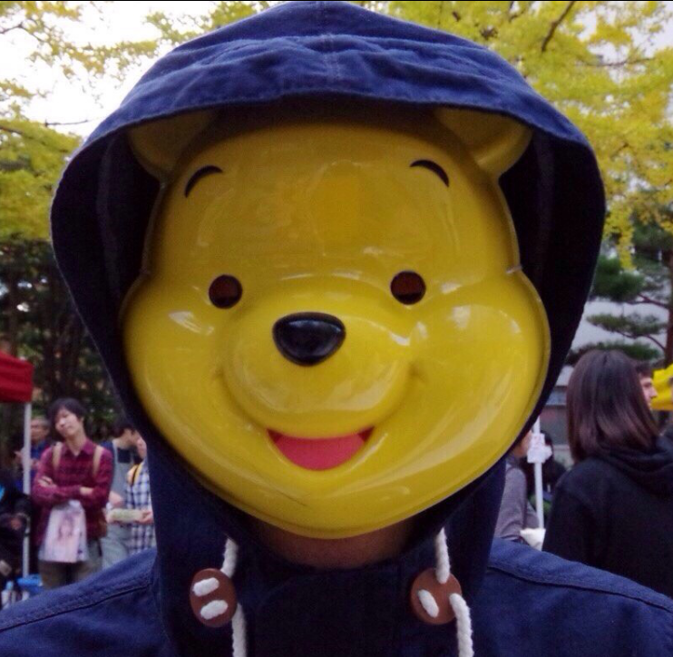

スキー部麻雀班
麻雀は、人生。- スキー部麻雀班 -
- Mission -
生まれついて人間には、成すべきことがある。
しかし人間は、自らの成すべきことを知らぬ。そして、模索する。
人生は短い。模索し、迷う時間を浪費するまでにどれだけのことができるか。
自らの成すべきことを見つけるのではない。
選択した道を、正しい答えに変えるのだ。
麻雀は、人生。
我々の答えが、世界を変えることを信じて。
- Member -
Yasushi Ikeda
スキー部麻雀班のリーダー的存在。
リーチ 一発 表3枚 裏3枚。
これが泰の麻雀の全て。
Shogo Masuyama

スキー部麻雀班の神童。
過去に天才と呼ばれていたが国士無双に3回連続で振り込んでしまい、
二度と牌には触れないと決意した。
その後リーダーの説得により加盟。
野菜が嫌い。
Koji Soeda
スキー部麻雀班の暴れん坊。
その実力は誰もが認知できないほどと言われている。
タバコが大好きだが匂いには敏感で、
その矛盾がカオスを生み出し
この世を創造したと言われている。
Kazuki Shimada
スキー部麻雀班の癒し。
普段は眼鏡をかけているが、
跳満以上テンパると眼鏡が吹き飛ぶと言われている。
何気に情報通。
スキー部の闇を知りたいときは尋ねるのが吉。
おっぱいが好き。
Tsukasa Makino

スキー部麻雀班の阿部さん。
若くていい男であり、男の中の男の代表。
ハッテン場と呼ばれる公園に数多く出没する。
学内でも阿部さんと呼ばれ広く愛されている。
よかったのか？
ホイホイ麻雀班についてきちまって。
Hiro Miota
神。
過去にはヤハウェ、アッラーなどと呼ばれていた。
全世界の信仰の対象だということを自覚している。
いつか世界平和と
全生物の幸せをもたらす日を夢見ている。